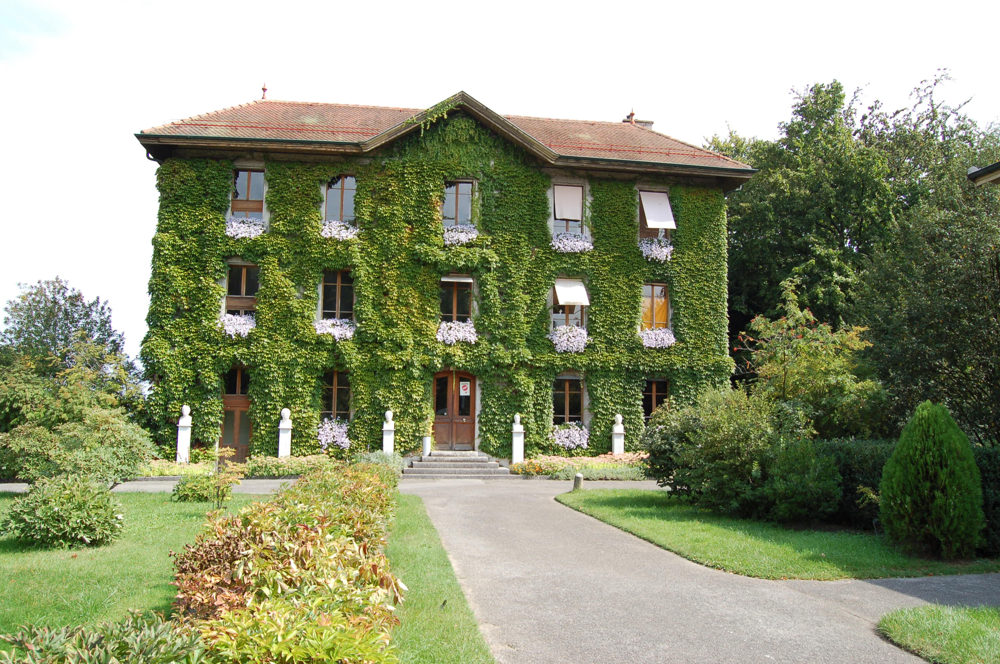
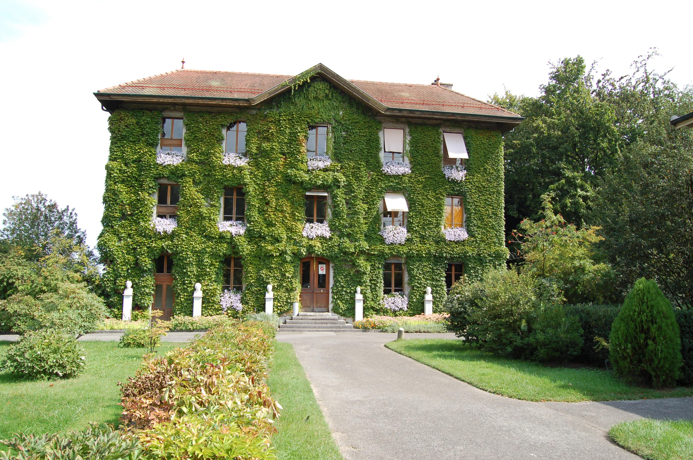

Hello and welcome to my page.
I have created this page to bring the love that I have for switzerland alive.
Its a place where tourists can learn more about this beautiful haven, share pictures from their own journeys and give us new information and feedback.
At the end of each page you will find image links to famous cities of switzerland. I will name the cities i have chosen in order of the picture links, i start of with Switzerland itself i then have Zurich, Geneva/Genf, Basel, St Gallen, on each page you will find a short description of the page, an image gallery is also included. The last picture is that of a form, I have added this feature to my website as well so you can give us feedback and i can hear from you.
I sincerley hope that you love and enjoy this page as much as I loved creating it. Oh and dont forget to leave some positivity and light behind for us under our form section.
love and kind regards, the SWITZOURIST team.
Have a look at the map of switzerland down below:

 



.jpg)